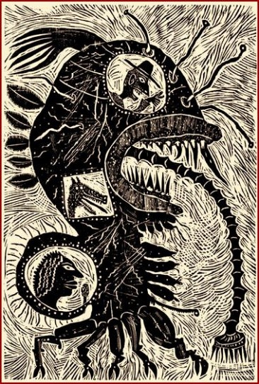

12 : January, 2011
Home
Editorial
Aboute
Prior Broadsheets
Friendes
Submitte
Blogge
Facebooke
Twitter
Contents
Editorial
Carnal Beauty
by
Kate Bernadette Benedict
To Mr W.S., from his agent
by
Alison Brackenbury
Child of 9-11
by
Michael R. Burch
A Trenta-Sei of Mixed Feelings at the Early Onset of Winter
by
Maryann Corbett
This Flea on Me
by
Wesli Court
Turning Time
by
Wesli Court
Azrael
by
Janann Dawkins
From the Diary of the Queen of Naples
by
Ann Drysdale
The Persistence of Desire
by
Anna Evans
Since
by
Hugh Fox
Platypus
by
Rose Kelleher
Matriarch
by
T.S. Kerrigan
Let This Year
by
Jee Leong Koh
The Cruel Gods of the North
by
Quincy R. Lehr
The Yo-yo
by
Amit Majmudar
Drinks Season
by
Damon Moore
Helicopter Flying Tutorial
by
Jane Røken
Recess
by
Jennifer Reeser
Daughters of the Playground
by
Marybeth Rua-Larsen
Mission Control
by
Don Thackrey

Image by
Mark Bulwinkle